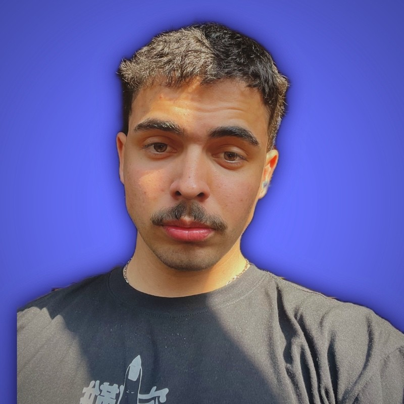

Kauan Davi - Futuro Desenvolvedor FrontEnd
Sou um curioso pela área de T.I e mantenho-me constantemente atualizado com as últimas inovações, apreciando as diversas vertentes que essa profissão oferece.
Neste momento, estou dedicando-me aos estudos em desenvolvimento web, abrangendo linguagens de programação, ferramentas de design, bancos de dados, noções básicas de infraestrutura, entre outras áreas. Possuo um conhecimento sólido na vertente de desenvolvimento Front-end, mas busco me tornar Full stack, mantendo-me sempre em busca de aprimoramento e evolução.
Neste momento trabalho na empresa Industrias PGG como Analista de TI, onde trabalho mais na parte de infraestrutura da empresa, gerando suporte.
